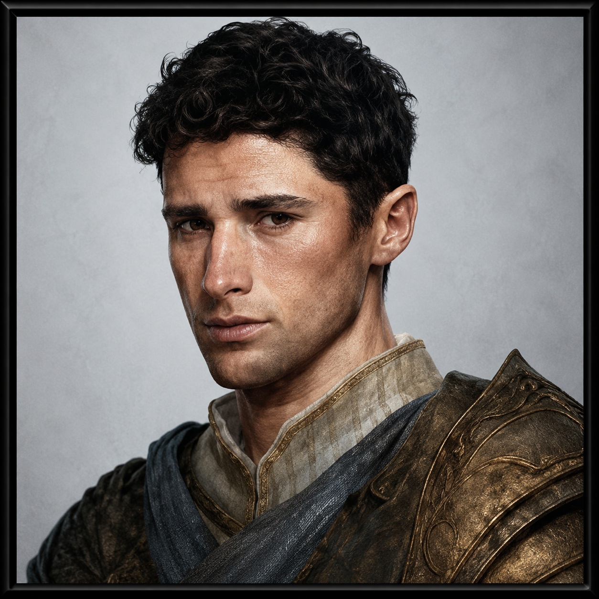

Cedric Longstrider
Cedric Longstrider is one of The Spice Boys.
“A leader who really didn't want to be a leader.”
The Spice BoysSword of ZarielReluctant LeaderMortal AscensionOverview
Cedric Longstrider began as a rugged folk hero built to travel, scout, survive, and fight beside his companions. His final record preserves a 13th-level multiclass character whose Ranger, Rogue, and Fighter levels formed a highly mobile and unusually durable combatant.
Yet Cedric's story became much larger than his build. He accepted the Sword of Zariel, carried celestial transformation, stood in the attention of powers far beyond mortals, and eventually returned the Sword to its rightful owner. Through every escalation, Cedric remained recognizable: responsible, grounded, and far more comfortable acting than commanding.
Cedric's power did not replace his identity. It revealed it. The more extraordinary his circumstances became, the more clearly the campaign showed the ordinary person still standing inside them.
Character Record
- Race: Human-Variant / Celestial
- Classes: Ranger 5 / Rogue 4 / Fighter 4
- Archetypes: Hunter / Scout / Champion
- Background: Folk Hero
- Alignment: Lawful Good
- Deities: Sune / Lathander
- Appearance: Rugged, unkempt brown hair; luminous silver eyes; tanned skin; wings
Defining Features
- Favored Enemy: Fiends
- Natural Explorer: Coast
- Two-Weapon Fighting
- Colossus Slayer
- Sneak Attack
- Cunning Action
- Action Surge
- Improved Critical
- Dual Wielder
- Tough
- Lucky
The Leader Who Did Not Want the Title
Cedric's leadership was emergent. He did not become important because he demanded authority. He became important because he stepped forward, accepted risk, and carried responsibility when someone had to.
The party could follow Cedric because his actions were dependable. Leadership arrived as a consequence of character, not ambition.
The Sword of Zariel
Cedric's bond recorded a desire to honor Zariel by destroying fiends and evildoers. The campaign later turned that written conviction into lived history when Cedric accepted the Sword of Zariel.
Receiving the Sword demonstrated that Cedric was worthy to carry extraordinary power. Returning it revealed something more important: he understood that worthiness did not make the Sword his.
Acceptance
Cedric's player remembered excitement at accepting the Sword. The moment recognized the hero Cedric had become.
Return
He remembered pride in returning it to its rightful owner. The act placed restoration above possession and responsibility above glory.
Shared Victory
Zariel's redemption and the salvation of Elturel belong to The Spice Boys as a whole. Cedric's Sword connection is central to his story without replacing the party's achievement.
Extraordinary, but Still Mortal
Cedric's later appearance made it impossible to mistake him for an ordinary traveler. His luminous silver eyes and wings marked a celestial transformation, while his experiences and losses separated him from the life he once knew.
But the person beneath those changes still wanted something strikingly simple: to feel normal.
“At the end of the day, Cedric really just wants to feel like a normal person, even though there are things about him that are very much not normal—wings, experiences, losses.”
A Pawn in the Cosmic Scale
Cedric's player identified a defining moment not in battle, but in being forgotten by Ao after returning. The experience placed Cedric's achievements against the scale of the cosmos.
He had carried legendary power and participated in events that changed the fate of a city, yet remained only a tiny piece within forces almost beyond comprehension. The realization did not diminish Cedric. It restored perspective.
Built to Survive
Cedric's final character record shows deliberate evolution. Dexterity, Constitution, Armor Class, hit points, mobility, defensive features, and the Tough and Lucky feats formed a character increasingly prepared to endure what the adventure demanded.
That survival-focused growth was not separate from his story. Cedric had to remain standing because others relied on him.
Notable Equipment
- Leather Armor, +2
- Cloak of Protection
- Stone of Good Luck
- Two Rapiers, +1
- Shortbow and quiver
- Bag of Holding
- Leatherworker's Tools
- Soul Coin carried during the Avernus campaign
Atlas Discoveries
Responsibility Over Reward
Cedric's greatest rewards increased what he was responsible for. Power arrived as stewardship rather than simple advancement.
Heroism Through Restraint
Cedric's defining act was not merely receiving legendary power, but choosing not to keep what belonged to another.
Moral Constant
His capabilities, appearance, reputation, and cosmic importance changed. His fundamental decency did not.
Restoration
Cedric's victories were most meaningful when they restored hope, trust, identity, or rightful order rather than simply defeating an enemy.
Power Reveals Character
Cedric's transformation did not ask what power would turn him into. It revealed who he already was once extraordinary power removed every excuse.
Campaign Highlights
- Served as a founding member of The Spice Boys.
- Entered Avernus as a Folk Hero whose favored enemies were fiends.
- Became an emergent leader through action and responsibility.
- Accepted the Sword of Zariel.
- Helped The Spice Boys restore Zariel and save Elturel.
- Returned the Sword to its rightful owner.
- Underwent visible celestial transformation, including luminous eyes and wings.
- Returned from Ao with a renewed understanding of his small place in the cosmic order.
- Continued into Mortal Ascension as a hero whose future had become as important as the city he helped save.
Atlas Discovery Status
Phase 2 Rerun: Complete — campaign memory strengthened Cedric's leadership, Sword, transformation, survival, and restoration arcs.
Phase 3 Rerun: Complete — emergent patterns established Cedric as a moral constant whose power revealed rather than replaced his identity.
Phase 4 Rerun: Complete — Atlas Portal material provided publication boundaries and preserved the party's shared ownership of Zariel's redemption.
Player Oral History: Complete — preserved Cedric's reluctance to lead, pride in returning the Sword, cosmic humility, desire for normalcy, and need to evolve in order to survive.
Evidence & Discovery Sources
🟢 Fantasy Grounds Character RecordEstablished Cedric's race, celestial state, classes, archetypes, background, alignment, appearance, statistics, feats, favored enemy, and survival-oriented build.
🟢 Campaign Archive and Supporting Evidence
Preserved Cedric's place among The Spice Boys, the shared restoration of Zariel, the salvation of Elturel, and the Mortal Ascension continuation.
🟡 Atlas Portal and Rerun Analysis
Clarified Cedric's themes of emergent leadership, responsibility, restraint, restoration, moral consistency, and identity under transformation.
🟡 Player Oral History
Oral history preserved what Cedric meant beyond the mechanics: a reluctant leader, proud custodian of Zariel's Sword, humbled mortal, and extraordinary person who still wanted to feel normal.